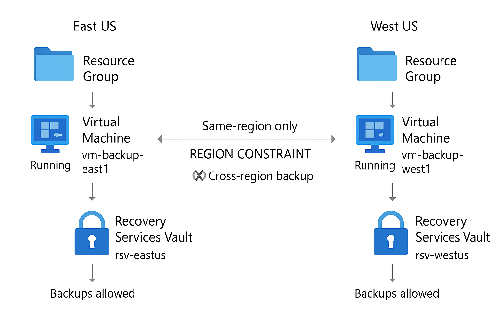
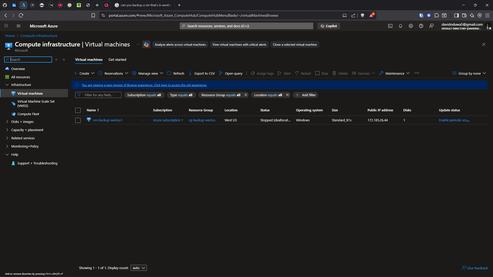
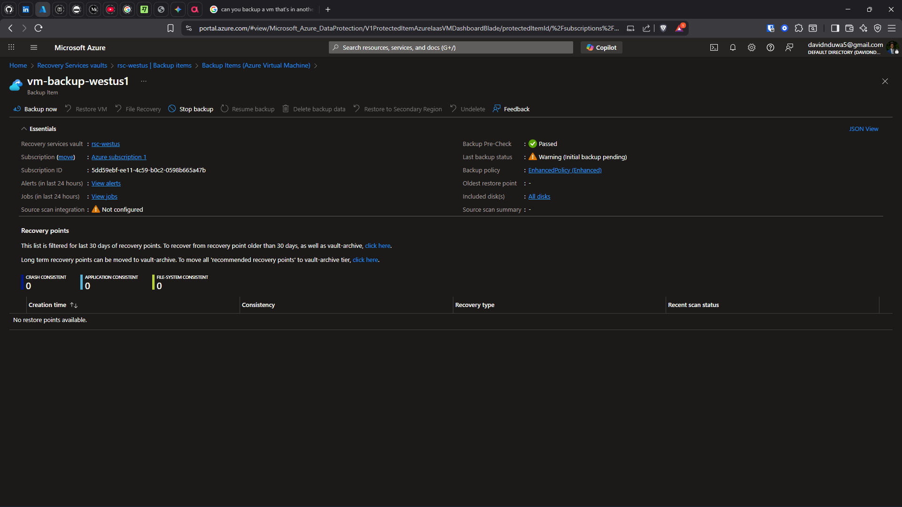

Problem
Without proper backup and disaster recovery, a regional outage or accidental deletion means permanent data loss. Most organizations discover their DR gaps only during an actual incident.
Architecture
Recovery Services Vault in primary region (East US) with tiered backup policies. Cross-region restore validation to West US. Soft-delete and purge protection enabled for defense-in-depth against accidental or malicious deletion.

Diagram

Rsv Overview

Cm Backup East1

Vm Backup Westus
Implementation
- Recovery Services Vault deployed with cross-region configuration
- VM backup policies with scheduled protection
- 7-day instant snapshot retention
- 30-day daily backup retention
- 6-month long-term retention
- Soft-delete enabled to prevent accidental permanent deletion
- RBAC guardrails for backup operator roles
Validation
- Backup jobs completing successfully and visible in vault
- Cross-region limitation confirmed: East US backup not visible in West US vault
- Soft-delete recovery: successfully restored a deleted backup item
- RBAC validation: non-authorized user blocked from modifying policies
- 1 successful cross-region test failover completed

Rg Overview Cross Region

Backup Deleted

Backup In Another Region Doesn'T Show
Quantified Outcomes
- 7-day instant snapshot retention configured
- 30-day daily backup retention validated
- 6-month long-term retention policy set
- 1 successful test failover completed
- 0 downtime during DR validation
- Soft-delete verified enabled and functional
Failure Scenarios Tested
- Deleted backup item → soft-delete caught and allowed recovery
- Attempted backup modification with Reader role → denied
- Checked cross-region vault visibility → confirmed region-scoped limitation
- Stopped source VM → verified backup still accessible from vault
Operational Considerations
- In production: use Azure Site Recovery for full VM replication across regions
- Implement automated DR runbooks with Azure Automation
- Schedule quarterly DR drills with documented recovery time objectives
- Configure backup alerts for failed jobs
- Use Azure Policy to enforce backup on all production VMs
- Consider immutable vault for ransomware protection
Lessons Learned
- DR plans must be tested regularly — untested plans are not plans
- Soft-delete is essential but purge protection adds the critical second layer
- Cross-region backup requires explicit geo-redundancy configuration
- Recovery time depends on backup type: snapshot (minutes) vs vault (hours)
Business Impact
Demonstrated both short-term data recovery and cross-region disaster recovery readiness. Established a 3-tier retention strategy that balances cost with recovery flexibility.